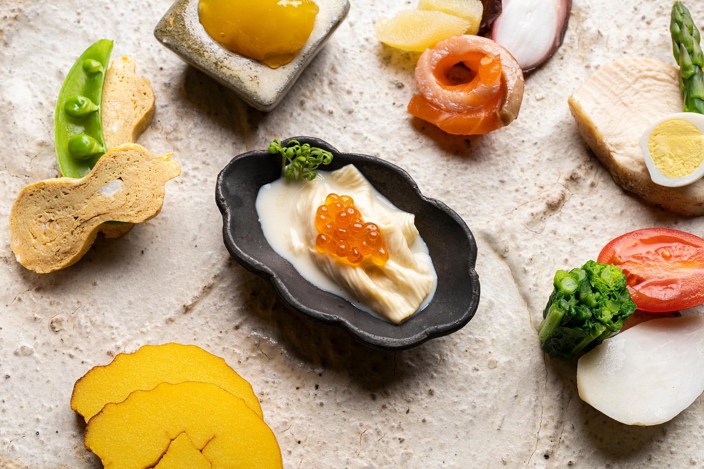
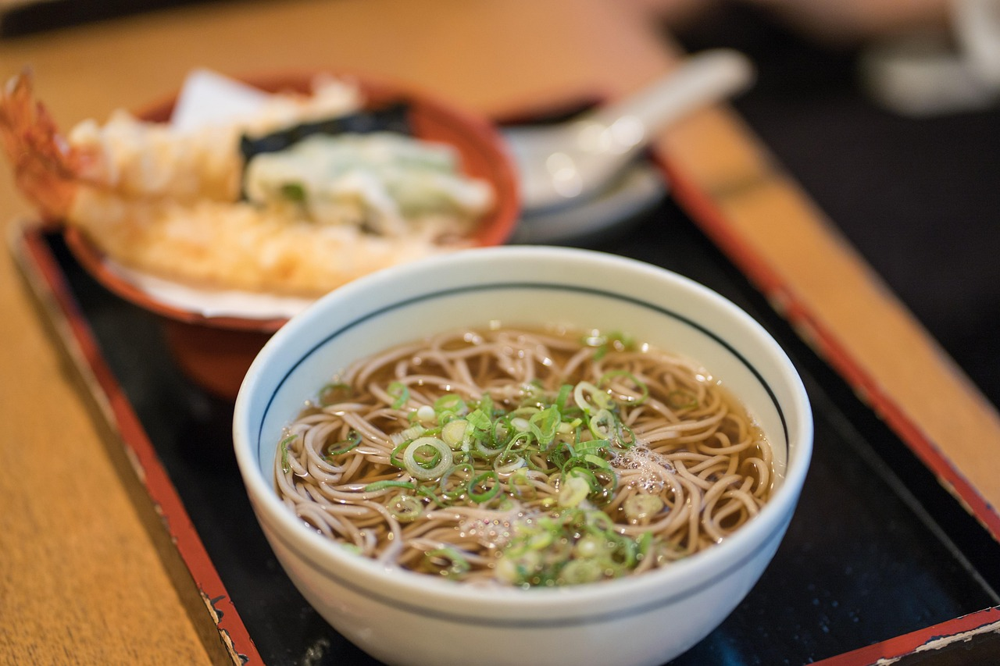
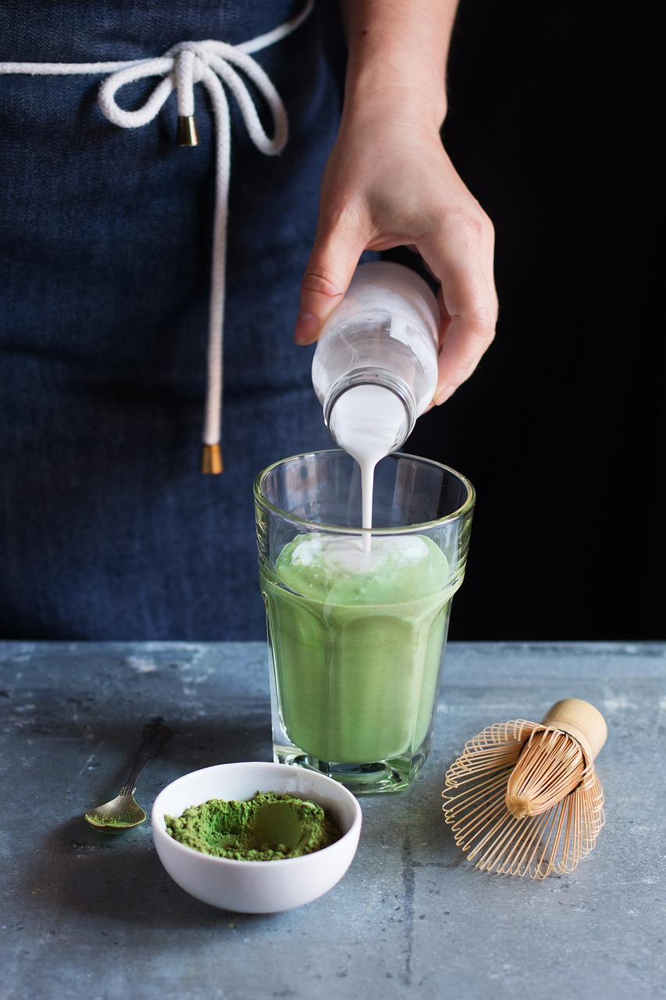
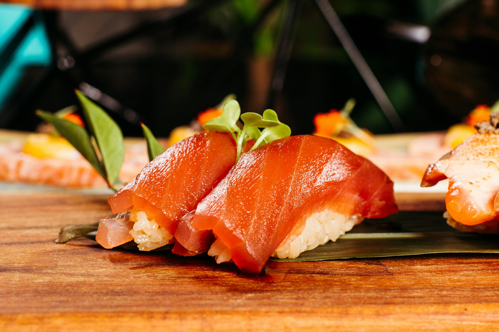
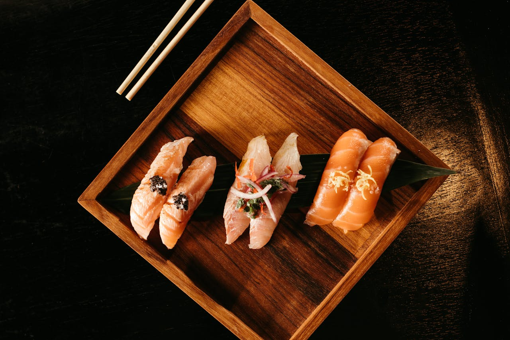
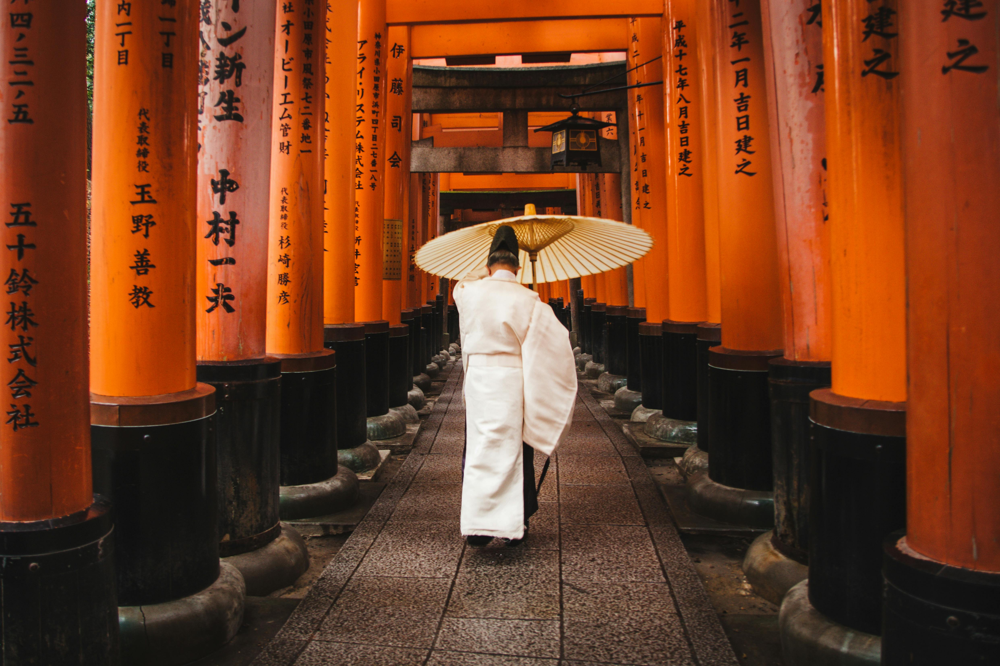

Sabores do Japão na sua mesa em poucos cliques
Experimente nossa autêntica culinária japonesa com ingredientes frescos e receitas tradicionais. Delivery rápido e seguro direto na sua casa!
Cardápio

À la carte

Rodízio

Menu executivo

Bebidas
Tradição Japonesa com sabor autêntico
O Miso & More nasceu do amor pela cultura e gastronomia japonesa. Fundado há mais de 15 anos pela família Tanaka, nosso restaurante combina técnicas tradicionais milenares com a comodidade do delivery moderno.



Entre em contato
Estamos sempre prontos para atendê-lo! Entre em contato para fazer pedidos, tirar dúvidas, solicitar informações sobre nossos pratos ou dar sugestões. Sua opinião é muito importante para nós.